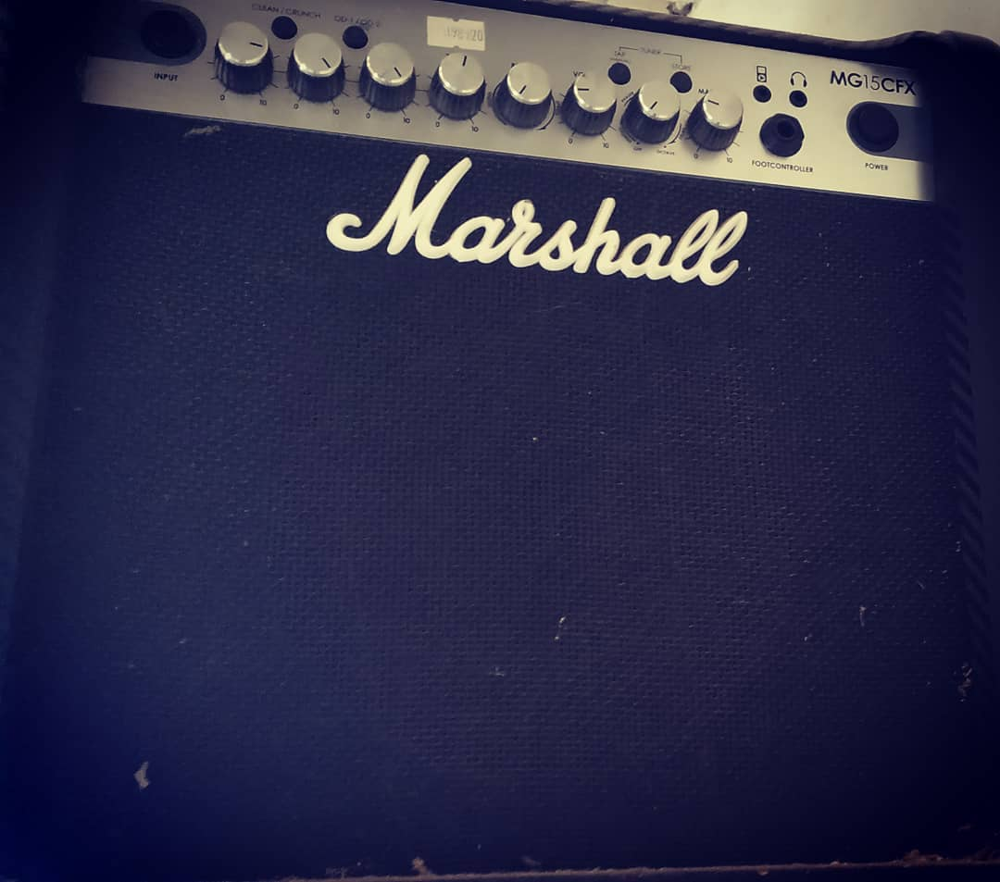

Scolded Sheep
Looking back, the fury I once felt—like navigating through a storm—was nothing more than a child’s tantrum over trivialities, distorted by ignorance within a turbulent environment.
This realization is the starting point for the reinterpretation and reconstruction of "Scolded Sheep," a track I originally composed at seventeen, now featured in the album Rocking Horse Glittered.
At the time I composed the original track (which, in terms of structure, does not differ significantly from the current version), I was in the midst of arguments with my partner at the time. The causes were jealousy and trivial matters that, in retrospect, I had blown out of proportion. My vision was clouded; my mind was drowning in a rage that demanded justice for what I perceived as unfair, and that anguish manifested as physical pain—like a migraine.
It could easily have been titled "When Problems Turn into Migraines." It accurately represents my state back then: confusion, a loss of direction, and an obsession with immediately resolving things that, in the grand flow of time, were meaningless. However, now that more than fifteen years have passed and I have decided to reconstruct it, I have changed the name.
The new title is "Scolded Sheep." Why? Generally, sheep are seen as symbols of innocence, submission, or beings that are tamed and guided—obedient creatures. I was no different. Despite appearing defiant, I was, in fact, entirely easy to manage.
There I was at seventeen: tormented by worthless events, suffering from headaches. A drama brought into my life by a woman. It was like a game I couldn't control, yet I struggled to solve it. In a sense, I was highly manipulable because I believed that drama—those problems—to be the truth. To me, it was an undeniable reality. Without knowing it, I had become a "scolded sheep."
Back then, I poured all that rage into a series of notes found by trial and error. It was an early composition, and my musical technique was immature, but I succeeded in infusing that fury into many of those sounds.

Marshall amplifier purchased around 2016. Currently used as a stand for my PC monitor.
In reconstructing this track, while maintaining the original rage, I added a crescendo to the drama, slightly mocking the "pitiful and obedient sheep" I once was. Consequently, it remains one of the few songs where I left the structure largely untouched. Naturally, I recorded, mastered, and polished every detail, redefining its meaning from an adult perspective. This is no longer just a song of anger; it is the song of an "angry sheep" inside the fold.
Thus, the piece begins with electric guitar and chaotic harmonies. After a break, it is followed by percussion evocative of the military. In fact, my mental state at the time felt as if I were living under a dictatorship. Then, with a major change added from my adult viewpoint, the song explodes. This change is the use of the "bandoneon."
The bandoneon does not only symbolize the drama, sadness, loneliness, and anger of that era. It also symbolizes the damp walls of the room where I originally composed the song, and the dry but unpainted walls where I reconstructed it today. It represents the poverty of then and the poverty of now—a nostalgia for both the Buenos Aires of the 2000s and the Buenos Aires of the 2020s. While the bandoneon is a fading element in Argentina, the melancholy of tango and that "indescribable something" (Que sé yo) still reside in the soul of every Argentine. As someone who forgets neither tango nor art, I have adopted it as one of my instruments—a personal mark that defines my identity in recent works. However, I do not cling to a single instrument, for that would be like clinging to a single emotion throughout one's life.
The track is very short, but the bandoneon solo, ringing out like a frenzied electric guitar, feels as if Jimmy Page and Piazzolla had merged. This sound, unseen elsewhere, strongly symbolizes the pitiful city sheep punished for their innocence and obedience.
The piece concludes with a single, long-sustained note from the electric guitar. There are two reasons for this. First, a raw, rock-style cutoff was necessary; otherwise, the solo and the madness of the rage expressed within it would continue indefinitely. Something had to sever the sine wave of musical sorcery so that a definitive end could be put to the anger. Second, while the bandoneon is well-suited for expressing melancholy in certain registers, it could not achieve the ideal acoustic harmony I sought for the extremely high-pitched tones.